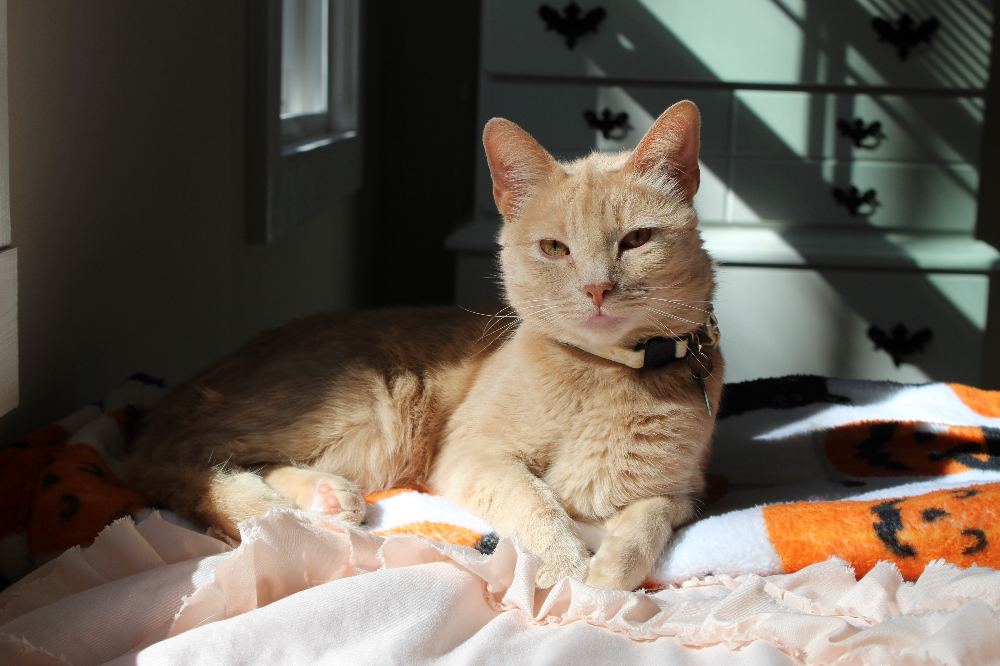

About me
My name is Cassidy Miller, and I've lived in the RVA area my whole life. After graduating highschool and working a few jobs, I decided that I would like to get a degree in graphic design. I am working on my associates through Bright Point Community College. The artwork featured on this page is a collection of work done throughout my time here and some indpenedent works i've done. There is a mix of arylic paintings, pen/charcoal works, and some graphics. Thank you for checking out my page!
